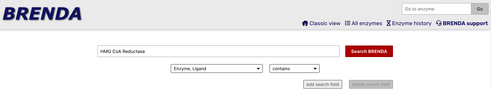
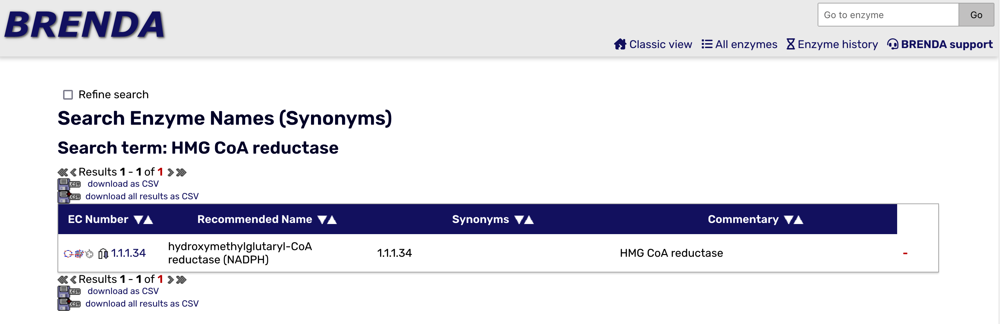
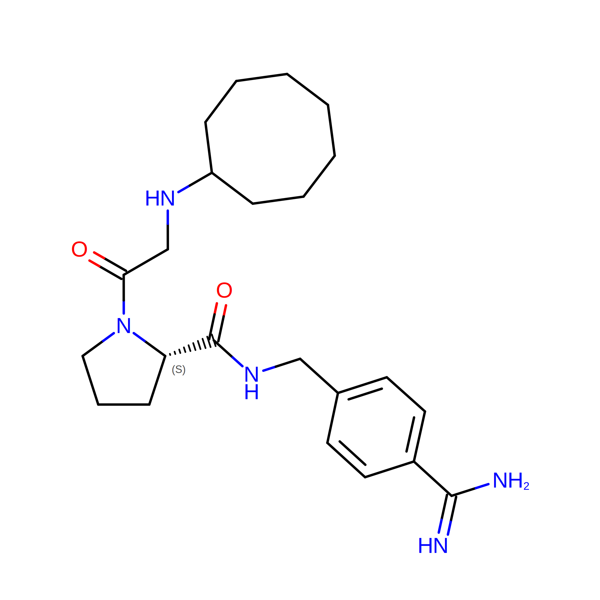
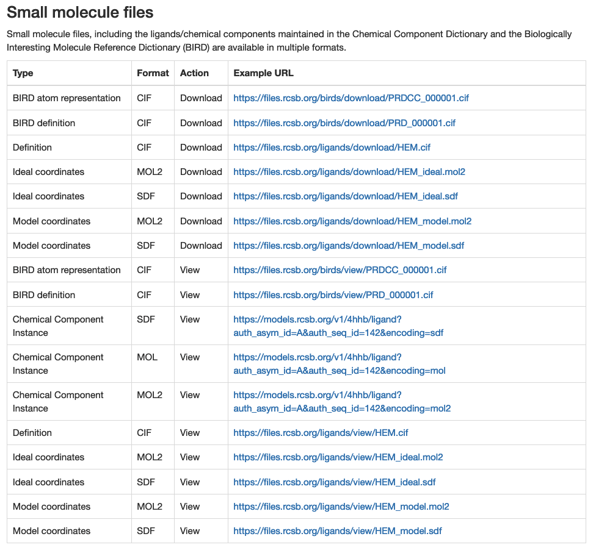

Enzyme Commission Class with Ligands#
Overview
Questions
How are enzymes classified?
How can I search the PDB for ligands that bind to a specific enzyme class?
Objectives
Understand the hierarchical classification of enzymes using the Enzyme Commission (EC) system.
Use the RCSB Search API to find ligands that bind to a specific enzyme class.
Enzymes are biological catalysts and most enzymes are proteins (at least that’s our current thinking). To systematize the study of enzymes, IUPAC (the International Union of Pure and Applied Chemistry) has organized enzymes in a hierarchical class structure, with 7 top level classes and a total of 4 levels in the hierarchy.
These classes are called the Enzyme Commission (EC) classes, and the hierarchy is called the EC system. Each enzyme is assigned an EC number based on the type of reaction it catalyzes. In this notebook, we will use the RCSB Search API to find ligands that bind to a specific enzyme class.
The 7 Enzyme Classes#
The BRENDA Enzyme Database contains detailed information about enzymes and includes a browser tree for enzyme classes. The 7 major classes of enzymes on the top level of the tree are
Oxidoreductases
Transferases
Hydrolases
Lyases
Isomerases
Ligases
Translocases
On the BRENDA Home Page, you can search for an enzyme by name and find its Enzyme Commision (EC) number, and a lot more detail as well. The first image below is the search for the enzyme HMG CoA Reductase, the control point for cholesterol synthesis. The second image shows the initial results page, which includes the EC number.


In this notebook, we will focus on trypsin, an enzyme produced by your pancreas that helps to digest proteins in your small intestine. It is a member of family called serine hydrolases. Members of this family use water to break bonds in proteins, lipids and carbohydrates. They are involved in digestion, cell signalling and blood clotting. The EC# for trypsin is 3.4.21.4. Here is the meaning of each level of the hierarchy:
3 - Hydrolase
3.4 - acting on peptide bonds
3.4.21 - serine endopeptidase
3.4.21.4 - trypsin
This notebook is intended to help users find ligands for use with docking studies.
We are looking for ligands that will bind to trypsin, with the intention of seeing if they will bind to other serine hydrolases that might be interesting. Here are the steps we will follow in the process, all of which will employ the rcsbsearchapi package.
Find PDB structures of a given Enzyme Commission class.
Select those structures that contain bound small molecules with molecular weights between 300 and 600.
Output a list of those ligands
Save the ligand structures to the “ligands_for_EC_class_#” folder.
Text (actually markdown) cells will be inserted to explain each step.
Libraries for the IQB workshop#
Library |
abbreviation |
Purpose |
|---|---|---|
rcsbsearchapi |
N/A |
functions for searching the Protein Data Bank based on the mmCIF dictionary |
os |
N/A |
operating system functions - handling file paths and directories. |
requests |
N/A |
access APIs for databases |
rdkit |
rdkit |
an open source github repository of cheminformatics software |
rdkit.Chem |
Chem |
a subset of rdkit that supports file string to structure conversions |
rdkit.Chem.AllChem |
AllChem |
a subset of rdkit.Chem that supports energy optimization |
rdkit.Chem.Draw |
Draw |
a subset of rdkit that supports chemical drawing in Python |
vina |
vina |
AutoDock Vina software for Python and Jupyter notebooks |
# Import the components of rcsbsearchapi needed for this search
from rcsbsearchapi import rcsb_attributes as attrs
Making queries#
To make a query with rcsbsearchapi you first must know what you are looking for. I find it helpful to actually write this out by hand sometimes. Here are the characteristics I am looking for in ligands that bind to a specific Enzyme Commission Class of a protein.
EC Class. I will focus on the EC class for trypsin, 3.4.21.4, but any class should work.
Ligands. I am looking for ligands that are larger than a single atom (e.g., potassium ion) or a buffer molecule (phosphate), but of a size that consists of 10-30 heavy atoms, so I will aim for a molecular weight between 300 and 800.
Please note that you can use this interface to search for dozens of attributes associated with a PDB entry. The attribute that we will use to look for proteins that have the EC# = 3.4.21.4 is rcsb_polymer_entity.rcsb_ec_lineage.id. Other searchable attributes include the abbreviated journal title for the primary citation, rcsb_primary_citation.rcsb_journal_abbrev, the method used to determine the structure exptl.method, or specific molecules that are part of PDB entries `pdbx_reference_molecule.class’.
# There will be three components to the query, which will be labeled q1, q2 and q3.
ECnumber = "3.4.21.4" # We will use this variable again later
q1 = attrs.rcsb_polymer_entity.rcsb_ec_lineage.id == ECnumber # looking for trypsins
q2 = attrs.chem_comp.formula_weight >= 300 # setting the lower limit for molecular weight
q3 = attrs.chem_comp.formula_weight <= 800 # setting the upper limit for molecular weight
query = q1 & q2 & q3 # combining the three queries into one
resultL = list(query()) # assign the results of the query to a list variable
print(resultL[0:10]) # list the first 10 results
len(resultL)
['1AQ7', '1AUJ', '1AZ8', '1BJV', '1BTW', '1BTX', '1BTZ', '1C1S', '1C1T', '1C2D']
180
Finding the ligands#
This query provided the list of the PDB entries for trypsins (EC # 3.4.21.4) that contain ligands between 300 and 800 molecular weight.
We printed the first 10 of these results using print(resultL[0:10]).
Why would we choose to have ligands with molecular weights between 300 and 800? We are interested in molecules that are large enough to bind to and fill up the active site of trypsin. Small molecules with molecular weights less than 300 are likely to be individual ions (K+ or Na+). Molecules with molecular weights greater than 800 will fill more than the active site of an enzyme.
Here is an image of one of the ligands from the search that we’re going to learn to download. It is identified in the Protein Data Bank as 13U. As a group we will look at some of the features that make this ligand interesting.

The last statement in the previous cell
len(resultL)
tells us how many PDB entries have ligands of that size. The default return item for the query is structure, which provides the four character alphanumeric entry for the full structure in the PDB. We want to identify and download the ligands that are bound to these PDB structures, so we need to switch return types.
To get the ligand, instead of returning the structure, we will request a return type of mol_definition which will then return the three character alphanumeric entry for the ligand. Other possible return types are polymer entities, assemblies, and non-polymer entities.
molResultL = list(query("mol_definition"))
print("There are",len(molResultL), "ligands for EC Number", ECnumber, "in this list. Here is a list of the first 10 ligands.")
molResultL[0:10]
There are 112 ligands for EC Number 3.4.21.4 in this list. Here is a list of the first 10 ligands.
['0CA', '0CB', '0KV', '0ZG', '0ZW', '0ZX', '0ZY', '10U', '11U', '12U']
Where can we go to download the ligand files?#
To download the files for ligands bound to trypsin in the RCSB PDB, execute the two cells above for finding the trypsin ligands. This will reset the results to the ones we want.
Once this is done, the next step is to determine exactly what we want to download. These ligand files in the PDB are avaiable for download in several formats. A full list and description can be found in the Small Molecule File table on the RCSB PDB File Download Services page, which is pasted in here.

From this table, we want the ligand files in mol2 format, which we will later convert to another format called pdbqt for docking.
How do we download the ligand files?#
There are several options for downloading files - we will use a Python libary called requests. In the following cells, we will import the library, requests, download a single file from the RCSB PDB using the requests.get function, and check to make sure the file downloaded properly to the ligands folder. If that is successful, we’ll use a for loop to download all of the files from our molResultL list to the ligands folder.
import requests # to enable us to pull files from the PDB
import os # to enable us to create a directory to store the files
# Download one of the files from our list: 11U.mol2
res11U_mol2 = requests.get('https://files.rcsb.org/ligands/download/11U_ideal.mol2')
# check to see that the file downloaded properly. A status code of 200 means everything is okay.
res11U_mol2.status_code
200
# To really be sure, let's look at the file one line at a time. First we write the downloaded content to a file.
# make a ligands folder for our results
os.makedirs("ligands", exist_ok=True)
with open("ligands/res11U.mol2", "w+") as file:
file.write(res11U_mol2.text)
# Now we use these commands to read the file and make sure it downloaded properly. As an alternative, we
# could go to the ligands folder in our Jupyter desktop and click on res11U.mol2 to make sure it looks correct.
file1 = open('ligands/res11U.mol2', 'r')
file_text = file1.read() # This reads in the file as a string.
print(file_text)
@<TRIPOS>MOLECULE
11U
59 61 0 0 0
SMALL
NO_CHARGES
@<TRIPOS>ATOM
1 C1 2.4220 0.4070 0.3360 C.2 1 11U_ideal 0.0000
2 O1 2.0060 -0.6420 0.7800 O.2 1 11U_ideal 0.0000
3 C2 3.8690 0.5350 -0.0630 C.3 1 11U_ideal 0.0000
4 N1 4.5590 -0.7380 0.1810 N.3 1 11U_ideal 0.0000
5 C3 5.9760 -0.6510 -0.1970 C.3 1 11U_ideal 0.0000
6 C4 6.7790 -0.0680 0.9670 C.3 1 11U_ideal 0.0000
7 C5 8.2550 0.0240 0.5730 C.3 1 11U_ideal 0.0000
8 C6 8.7810 -1.3740 0.2400 C.3 1 11U_ideal 0.0000
9 C7 7.9780 -1.9570 -0.9250 C.3 1 11U_ideal 0.0000
10 C8 6.5020 -2.0480 -0.5310 C.3 1 11U_ideal 0.0000
11 N2 1.5890 1.4580 0.1990 N.am 1 11U_ideal 0.0000
12 C9 0.1600 1.4690 0.5420 C.3 1 11U_ideal 0.0000
13 C10 -0.5770 0.4580 -0.2980 C.2 1 11U_ideal 0.0000
14 O2 0.0270 -0.2120 -1.1080 O.2 1 11U_ideal 0.0000
15 C11 -0.3710 2.8880 0.2460 C.3 1 11U_ideal 0.0000
16 C12 0.9140 3.7560 0.2780 C.3 1 11U_ideal 0.0000
17 C13 1.9600 2.7850 -0.3250 C.3 1 11U_ideal 0.0000
18 N3 -1.9070 0.2990 -0.1490 N.am 1 11U_ideal 0.0000
19 C14 -2.6230 -0.6850 -0.9660 C.3 1 11U_ideal 0.0000
20 C15 -4.0860 -0.6660 -0.6070 C.ar 1 11U_ideal 0.0000
21 C16 -4.5620 -1.4980 0.3910 C.ar 1 11U_ideal 0.0000
22 C17 -5.9000 -1.4810 0.7270 C.ar 1 11U_ideal 0.0000
23 C18 -6.7750 -0.6300 0.0520 C.ar 1 11U_ideal 0.0000
24 C19 -8.2130 -0.6110 0.4050 C.2 1 11U_ideal 0.0000
25 N4 -9.0280 0.1840 -0.2270 N.2 1 11U_ideal 0.0000
26 N5 -8.6890 -1.4350 1.4020 N.pl3 1 11U_ideal 0.0000
27 C20 -6.2910 0.2030 -0.9560 C.ar 1 11U_ideal 0.0000
28 C21 -4.9490 0.1800 -1.2800 C.ar 1 11U_ideal 0.0000
29 H1 3.9330 0.7860 -1.1220 H 1 11U_ideal 0.0000
30 H2 4.3400 1.3220 0.5260 H 1 11U_ideal 0.0000
31 H3 4.4590 -1.0250 1.1430 H 1 11U_ideal 0.0000
32 H4 6.0800 -0.0050 -1.0690 H 1 11U_ideal 0.0000
33 H5 6.4040 0.9280 1.2050 H 1 11U_ideal 0.0000
34 H6 6.6750 -0.7130 1.8390 H 1 11U_ideal 0.0000
35 H7 8.8270 0.4390 1.4030 H 1 11U_ideal 0.0000
36 H8 8.3590 0.6690 -0.2990 H 1 11U_ideal 0.0000
37 H9 8.6770 -2.0190 1.1120 H 1 11U_ideal 0.0000
38 H10 9.8320 -1.3090 -0.0410 H 1 11U_ideal 0.0000
39 H11 8.3530 -2.9520 -1.1620 H 1 11U_ideal 0.0000
40 H12 8.0820 -1.3110 -1.7970 H 1 11U_ideal 0.0000
41 H13 6.3980 -2.6930 0.3420 H 1 11U_ideal 0.0000
42 H14 5.9300 -2.4630 -1.3600 H 1 11U_ideal 0.0000
43 H15 0.0300 1.2400 1.6000 H 1 11U_ideal 0.0000
44 H16 -1.0720 3.2080 1.0170 H 1 11U_ideal 0.0000
45 H17 -0.8360 2.9240 -0.7390 H 1 11U_ideal 0.0000
46 H18 1.1770 4.0280 1.3010 H 1 11U_ideal 0.0000
47 H19 0.8020 4.6440 -0.3440 H 1 11U_ideal 0.0000
48 H20 2.9630 3.0560 0.0040 H 1 11U_ideal 0.0000
49 H21 1.9020 2.7930 -1.4130 H 1 11U_ideal 0.0000
50 H22 -2.3900 0.8350 0.4990 H 1 11U_ideal 0.0000
51 H23 -2.5040 -0.4370 -2.0200 H 1 11U_ideal 0.0000
52 H24 -2.2160 -1.6780 -0.7780 H 1 11U_ideal 0.0000
53 H25 -3.8840 -2.1590 0.9100 H 1 11U_ideal 0.0000
54 H26 -6.2690 -2.1270 1.5090 H 1 11U_ideal 0.0000
55 H27 -9.9700 0.1960 0.0040 H 1 11U_ideal 0.0000
56 H28 -8.0820 -2.0270 1.8720 H 1 11U_ideal 0.0000
57 H29 -9.6310 -1.4220 1.6330 H 1 11U_ideal 0.0000
58 H30 -6.9630 0.8640 -1.4820 H 1 11U_ideal 0.0000
59 H31 -4.5730 0.8240 -2.0610 H 1 11U_ideal 0.0000
@<TRIPOS>BOND
1 1 11 am
2 11 17 1
3 11 12 1
4 1 2 2
5 1 3 1
6 16 17 1
7 15 16 1
8 12 15 1
9 12 13 1
10 13 18 am
11 13 14 2
12 18 19 1
13 19 20 1
14 20 28 ar
15 20 21 ar
16 27 28 ar
17 23 27 ar
18 23 24 1
19 22 23 ar
20 24 25 2
21 24 26 1
22 21 22 ar
23 3 4 1
24 4 5 1
25 5 10 1
26 5 6 1
27 9 10 1
28 8 9 1
29 7 8 1
30 6 7 1
31 3 29 1
32 3 30 1
33 17 48 1
34 17 49 1
35 16 46 1
36 16 47 1
37 15 44 1
38 15 45 1
39 12 43 1
40 18 50 1
41 19 51 1
42 19 52 1
43 28 59 1
44 27 58 1
45 25 55 1
46 26 56 1
47 26 57 1
48 22 54 1
49 21 53 1
50 4 31 1
51 5 32 1
52 10 41 1
53 10 42 1
54 9 39 1
55 9 40 1
56 8 37 1
57 8 38 1
58 7 35 1
59 7 36 1
60 6 33 1
61 6 34 1
Downloading all of the ligands using a for loop#
Now that we know that our process functions, we will use a for loop to download the entire list of ligands (all 112) in a single cell. Here are the steps we will take:
Define a variable, baseUrl, for the URL where the ligand files are located. The URL only lacks the specific name of the ligand file.
Set up a
forloop to go through each of the items (as ChemID) in the molResultL list that was generated above.Assign the filename based on a variable (the 3-letter name of the ligand as ChemID followed by _ideal.mol2) to the variable cFile.
Assign the full URL (as cFileUrl) that we want to use to download the data from the RCSB PDB API. Notice that the URL will consist of the baseUrl (defined in the first line of the cell) followed by the name of the file we just defined, which is now assigned to the variable, cFile.
Tell the notebook that we want the file (CFileLocal) to be written to the ligands folder, using the os.path command.
Use the API call via
requests.getto download the data from the RCSB PDB.Write the file using the
with openfunction.
If all goes according to plan, this should download all of the ligands on our list to the ligands folder.
baseUrl = "https://files.rcsb.org/ligands/download/"
for ChemID in molResultL:
cFile = f"{ChemID}_ideal.mol2"
cFileUrl = baseUrl + cFile
cFileLocal = "ligands/" + cFile
response = requests.get(cFileUrl)
with open(cFileLocal, "w+") as file:
file.write(response.text)
Selected ligands#
For our next notebook, we are going to select and modify one of the ligands from the list. Any of them could be used, but we will be using 13U: N-cyclooctylglycyl-N-(4-carbamimidoylbenzyl)-L-prolinamide.
Exercise#
To go a bit deeper with these tools, use the BRENDA Enzyme Database to find the EC# for alcohol dehydrogenase (or look for an enzyme that interests you). How many structures have ligands with molecular weights between 400 and 700? How many unique ligands are bound to these structures?
Note: You can enter only the upper levels of an EC Class to identify more ligands. This exercise can be repeated with any EC#. If you have time, try a broader search where you use only 2 or 3 levels, e.g., 3.4 or 3.4.21, and see what you find.
### Solution
ECnumber = "1.1.1.1" # We will use this variable again later
q1 = attrs.rcsb_polymer_entity.rcsb_ec_lineage.id == ECnumber # looking for trypsins
q2 = attrs.chem_comp.formula_weight >= 400 # setting the lower limit for molecular weight
q3 = attrs.chem_comp.formula_weight <= 700 # setting the upper limit for molecular weight
query = q1 & q2 & q3 # combining the three queries into one
ResultL = list(query("entry"))
molResultL = list(query("mol_definition"))
print("There are",len(ResultL), "structures from EC Number", ECnumber, "that have bound ligands with molecular weights between 400 and 700).")
print("There are",len(molResultL), "unique ligands for structures with EC Number", ECnumber, "in this list. Here is a list of the", len(molResultL), "ligands.")
molResultL
There are 173 structures from EC Number 1.1.1.1 that have bound ligands with molecular weights between 400 and 700).
There are 11 unique ligands for structures with EC Number 1.1.1.1 in this list. Here is a list of the 11 ligands.
['022', 'APR', 'CHD', 'CND', 'COD', 'NAD', 'NAI', 'NAJ', 'PAD', 'TAD', 'WKZ']